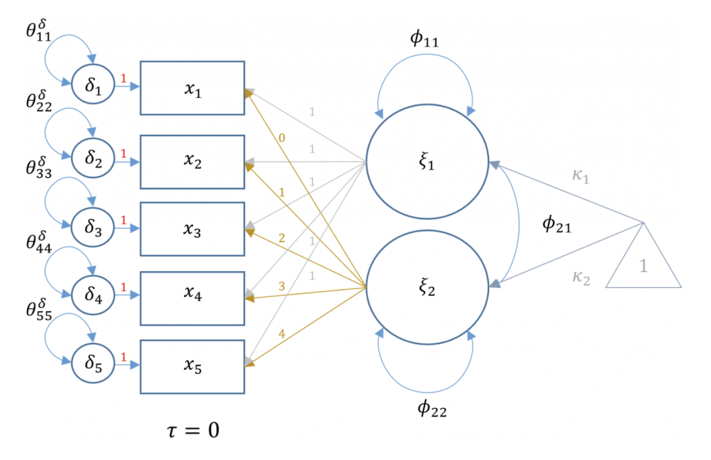
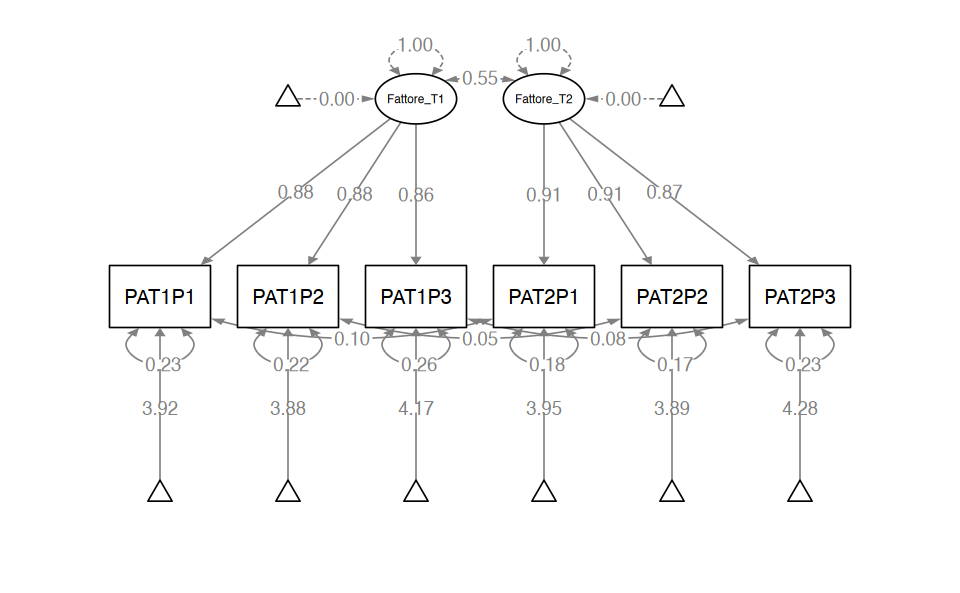
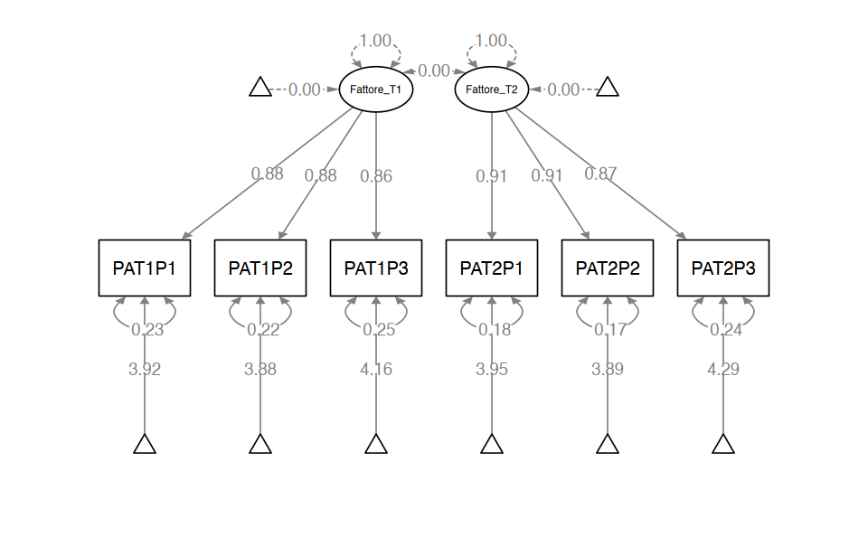
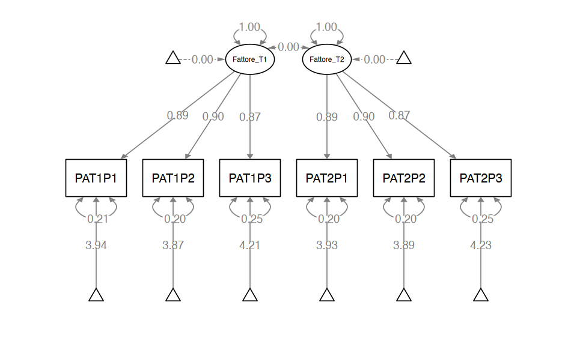

here::here("code", "_common.R") |>
source()
# Load packages
if (!requireNamespace("pacman")) install.packages("pacman")
pacman::p_load(kableExtra, lme4)73 Dati longitudinali
Prerequisiti
Concetti e Competenze Chiave
Preparazione del Notebook
73.1 Introduzione
L’obiettivo di questo capitolo è esaminare come è possibile estendere i modelli SEM per adattarli alle particolarità dei dati longitudinali. Per semplificare, cominciamo concentrandoci su due misurazioni temporali consecutive.
73.2 Misurare il Cambiamento
Il modo più semplice per valutare il cambiamento individuale tra due momenti temporali consiste nel calcolare la differenza tra i punteggi ottenuti nelle due occasioni. Tuttavia, questa strategia ha un limite significativo: non disponiamo del punteggio “vero” dell’individuo in ciascun momento, ma solo di una misura influenzata dall’errore di misurazione. L’errore di misurazione può ridurre notevolmente la precisione delle stime sulle differenze individuali, compromettendo l’interpretazione del cambiamento.
Per superare questo problema negli studi longitudinali, vengono impiegati i modelli di crescita latente (Latent Growth Models, LGM), appartenenti alla famiglia dei modelli a equazioni strutturali (SEM). Questi modelli permettono di stimare traiettorie di cambiamento per ciascun individuo, separando le componenti latenti dal rumore delle misurazioni.
73.2.1 Componenti del Modello di Crescita Latente
Nei LGM, si assume che ogni individuo segua una propria traiettoria di cambiamento nel tempo. I dati osservati possono essere scomposti in tre componenti principali:
- Punteggi latenti: rappresentano il livello individuale del costrutto in un dato momento.
- Punteggi di cambiamento latenti: indicano il cambiamento individuale nel tempo.
- Caratteristiche uniche non osservate: includono gli errori di misurazione specifici per ogni momento.
L’equazione generale del modello SEM è espressa come:
\[ \Sigma = \Lambda \Psi \Lambda' + \Theta, \]
dove:
- $ $ rappresenta la matrice delle varianze e covarianze teoriche.
- $ $ è la matrice dei carichi fattoriali, che descrive le relazioni tra indicatori e costrutti latenti.
- $ $ indica le varianze e covarianze tra i fattori latenti.
- $ $ rappresenta le varianze residue e covarianze tra gli errori di misura.
73.2.2 Struttura del Modello di Misurazione Longitudinale
In un modello longitudinale, si definiscono tre fattori latenti principali:
- Un fattore che rappresenta il livello di base del costrutto in un dato momento.
- Un fattore che rappresenta il cambiamento nel costrutto tra momenti temporali.
- Un fattore che rappresenta l’errore di misurazione specifico per ciascun momento.
Per illustrare come funziona questo modello, consideriamo un costrutto misurato in due occasioni. Il punteggio osservato di un individuo in un tempo specifico può essere descritto dalla formula:
\[ x_{it} = \tau_i + (1)\xi_1 + (t)\xi_2 + \delta_{it}, \]
dove:
- \(\tau_i\) è il livello iniziale dell’individuo \(i\),
- \(\xi_1\) rappresenta il livello latente al tempo \(t_1\),
- \(\xi_2\) rappresenta il cambiamento latente tra i due momenti,
- \(\delta_{it}\) è l’errore di misurazione specifico per l’individuo \(i\) al tempo \(t\).
73.2.3 Modello per Più Occasioni di Misurazione
Quando vengono utilizzati più indicatori in ciascun momento, la struttura del modello può essere rappresentata come segue:
\[ \begin{align} x_{1} &= 0 + (1)\xi_{1} + (0)\xi_{2} + \delta_{1} \notag\\ x_{2} &= 0 + (1)\xi_{1} + (1)\xi_{2} + \delta_{2} \notag\\ x_{3} &= 0 + (1)\xi_{1} + (2)\xi_{2} + \delta_{3} \notag\\ x_{4} &= 0 + (1)\xi_{1} + (4)\xi_{2} + \delta_{4} \notag\\ x_{5} &= 0 + (1)\xi_{1} + (5)\xi_{2} + \delta_{5} \notag \end{align} \]
Inoltre, nel modello si ipotizza una correlazione tra \(\xi_1\) e \(\xi_2\), rappresentata dalla matrice di intercorrelazione dei fattori:
\[ \mathbf{\Phi} = \begin{bmatrix} \phi_{11} & \\ \phi_{21} & \phi_{22} \end{bmatrix} \]
dove:
- \(\phi_{11}\) è la varianza dell’intercetta latente (livello di base),
- \(\phi_{22}\) è la varianza della pendenza latente (cambiamento nel tempo),
- \(\phi_{21}\) è la covarianza tra intercetta e pendenza, utile per comprendere come il livello iniziale sia associato alla velocità di cambiamento.
73.2.4 Correlazioni tra Varianze Residue
Un aspetto distintivo dei modelli longitudinali è la possibilità di correlare le varianze residue degli stessi indicatori misurati in momenti diversi (ad esempio, la correlazione tra X1 al Tempo 1 e X1 al Tempo 2). Questo consente di distinguere tra le informazioni stabili del costrutto nel tempo e le variazioni specifiche di ciascun indicatore a ogni misurazione.
73.2.5 Interpretazione e Utilità
Questo approccio permette di esaminare in modo approfondito lo sviluppo o il cambiamento di un costrutto latente e dei suoi indicatori nel tempo, fornendo un quadro dettagliato delle dinamiche individuali e collettive di cambiamento.
Il modello di crescita latente definito da queste equazioni produce previsioni sulla struttura delle medie e delle covarianze dei dati osservati. Queste previsioni sono utilizzate nel contesto della modellizzazione delle equazioni strutturali per stimare i parametri e valutare l’adattamento del modello ai dati. La struttura delle covarianze prevista dal modello è:
\[ \boldsymbol{\Sigma} = \boldsymbol{\Lambda} \boldsymbol{\Phi} \boldsymbol{\Lambda}' + \boldsymbol{\Theta}. \]
La figura Figura 73.1 rappresenta graficamente il percorso del modello di crescita latente (LGM) che stiamo analizzando.

73.3 La Variazione Temporale di Positive Affect
Applichiamo questo modello al caso in cui tre indicatori di Positive Affect (Glad, Cheerful, Happy) vengono misurati in due momenti del tempo (si veda Little (2023)).
Importiamo i dati.
dat <- read.table(
file = "../../data/grade7and8.long.823.dat",
col.names = c(
"PAT1P1", "PAT1P2", "PAT1P3", "NAT1P1", "NAT1P2", "NAT1P3",
"PAT2P1", "PAT2P2", "PAT2P3", "NAT2P1", "NAT2P2", "NAT2P3",
"PAT3P1", "PAT3P2", "PAT3P3", "NAT3P1", "NAT3P2", "NAT3P3",
"grade", "female", "black", "hispanic", "other"
)
)
glimpse(dat)Rows: 823
Columns: 23
$ PAT1P1 <dbl> 1.50000, 2.98116, 3.50000, 3.00000, 3.00000, 3.00000, 3.0~
$ PAT1P2 <dbl> 1.50000, 2.98284, 4.00000, 3.50000, 2.50000, 2.50000, 2.5~
$ PAT1P3 <dbl> 2.00000, 2.98883, 4.00000, 2.50000, 3.00000, 3.00000, 4.0~
$ NAT1P1 <dbl> 2.50000, 1.56218, 1.50000, 1.50000, 1.00000, 1.50000, 1.0~
$ NAT1P2 <dbl> 3.50000, 1.45688, 1.00000, 2.00000, 1.00000, 2.50000, 1.0~
$ NAT1P3 <dbl> 3.00000, 1.65477, 1.00000, 1.50000, 1.00000, 2.50000, 1.0~
$ PAT2P1 <dbl> 4.00000, 4.00000, 4.00000, 2.95942, 3.17170, 2.00000, 3.0~
$ PAT2P2 <dbl> 4.00000, 4.00000, 2.50000, 2.99083, 2.87806, 2.00000, 3.0~
$ PAT2P3 <dbl> 4.00000, 4.00000, 4.00000, 3.06670, 3.11031, 3.00000, 4.0~
$ NAT2P1 <dbl> 2.00000, 1.00000, 1.00000, 1.65159, 1.65777, 2.00000, 1.0~
$ NAT2P2 <dbl> 1.00000, 1.00000, 1.00000, 1.42599, 1.44804, 2.00000, 1.0~
$ NAT2P3 <dbl> 2.00000, 1.00000, 1.00000, 1.67184, 1.56296, 2.00000, 1.0~
$ PAT3P1 <dbl> 4.00000, 4.00000, 4.00000, 4.00000, 2.67109, 3.00000, 2.5~
$ PAT3P2 <dbl> 4.00000, 4.00000, 4.00000, 3.50000, 2.85851, 2.00000, 2.0~
$ PAT3P3 <dbl> 4.00000, 4.00000, 3.48114, 3.50000, 3.28099, 2.50000, 3.5~
$ NAT3P1 <dbl> 1.00000, 1.00000, 1.18056, 1.00000, 1.19869, 2.00000, 1.0~
$ NAT3P2 <dbl> 1.00000, 1.00000, 1.00000, 1.50000, 1.00000, 2.00000, 1.0~
$ NAT3P3 <dbl> 2.50000, 1.00000, 1.62051, 1.00000, 1.00000, 3.00000, 1.0~
$ grade <int> 7, 7, 7, 7, 7, 7, 7, 7, 7, 7, 7, 7, 7, 7, 7, 7, 7, 7, 7, ~
$ female <int> 2, 1, 2, 1, 1, 1, 2, 1, 1, 1, 2, 1, 1, 1, 2, 1, 2, 2, 2, ~
$ black <int> 0, 0, 0, 0, 0, 0, 0, 0, 0, 0, 0, 0, 0, 0, 1, 0, 0, 0, 0, ~
$ hispanic <int> 0, 0, 1, 0, 0, 0, 0, 0, 0, 0, 0, 0, 0, 0, 0, 0, 1, 0, 0, ~
$ other <int> 0, 1, 0, 0, 0, 0, 0, 0, 0, 0, 0, 0, 0, 0, 0, 0, 0, 0, 1, ~La specificazione del modello SEM longitudinale per questi dati in lavaan può essere formulata in modo simile a un modello CFA per un singolo momento del tempo. In questo caso, ci sono due fattori comuni, che chiameremo Fattore_T1 e Fattore_T2, che vengono identificati dagli indicatori misurati nei due momenti del tempo. Questi due fattori comuni sono correlati tra loro.
Tuttavia, la differenza chiave rispetto ai casi precedenti è che i fattori specifici di ciascun indicatore nei due momenti del tempo sono anche correlati tra loro. Questo significa che, oltre alla correlazione tra i fattori comuni Fattore_T1 e Fattore_T2, dobbiamo anche specificare la correlazione tra i fattori specifici dei singoli indicatori nei due momenti del tempo.
mod_1 <- "
# Definizione dei fattori latenti al tempo T1
Fattore_T1 =~ NA*PAT1P1 + PAT1P2 + PAT1P3
# Definizione dei fattori latenti al tempo T2
Fattore_T2 =~ NA*PAT2P1 + PAT2P2 + PAT2P3
# Varianza dei fattori latenti
Fattore_T1 ~~ 1*Fattore_T1
Fattore_T2 ~~ 1*Fattore_T2
# Covarianza tra i fattori latenti
Fattore_T1 ~~ Fattore_T2
# Definizione degli errori di misurazione per gli indicatori al tempo T1
PAT1P1 ~~ PAT1P1
PAT1P2 ~~ PAT1P2
PAT1P3 ~~ PAT1P3
# Definizione degli errori di misurazione per gli indicatori al tempo T2
PAT2P1 ~~ PAT2P1
PAT2P2 ~~ PAT2P2
PAT2P3 ~~ PAT2P3
# Covarianze tra i residui degli item tra T1 e T2
PAT1P1 ~~ PAT2P1
PAT1P2 ~~ PAT2P2
PAT1P3 ~~ PAT2P3
# Opzionale: Specifica delle medie degli indicatori (intercette)
PAT1P1 ~ 1
PAT1P2 ~ 1
PAT1P3 ~ 1
PAT2P1 ~ 1
PAT2P2 ~ 1
PAT2P3 ~ 1
"Le covarianze tra gli errori degli indicatori corrispondenti tra T1 e T2 sono stimate, indicando potenziali correlazioni tra gli errori degli stessi indicatori nei due momenti temporali.
In questo modello, i carichi fattoriali e le intercettazioni non sono ancora eguagliati nel tempo, il che significa che ogni set di indicatori è libero di avere relazioni uniche con il proprio fattore latente in ciascun momento temporale.
Questo modello è definito “configural-invariant” perché mantiene la stessa struttura fattoriale (o configurazione) nel tempo, ma non impone ancora l’equivalenza dei parametri tra i due momenti temporali.
Il modello configural-invariant è spesso il punto di partenza per testare l’invarianza longitudinale in SEM, poiché stabilisce una base di confronto prima di imporre vincoli più stringenti come l’invarianza dei carichi fattoriali o delle intercette nei modelli successivi.
Adattiamo il modello ai dati.
fit_1 <- lavaan::sem(mod_1, data = dat, meanstructure = TRUE)parameterEstimates(fit_1) |> print() lhs op rhs est se z pvalue ci.lower ci.upper
1 Fattore_T1 =~ PAT1P1 0.670 0.022 30.862 0.000 0.628 0.713
2 Fattore_T1 =~ PAT1P2 0.661 0.021 31.241 0.000 0.619 0.702
3 Fattore_T1 =~ PAT1P3 0.643 0.021 29.979 0.000 0.601 0.685
4 Fattore_T2 =~ PAT2P1 0.689 0.021 32.994 0.000 0.648 0.730
5 Fattore_T2 =~ PAT2P2 0.680 0.021 33.049 0.000 0.639 0.720
6 Fattore_T2 =~ PAT2P3 0.639 0.021 31.155 0.000 0.598 0.679
7 Fattore_T1 ~~ Fattore_T1 1.000 0.000 NA NA 1.000 1.000
8 Fattore_T2 ~~ Fattore_T2 1.000 0.000 NA NA 1.000 1.000
9 Fattore_T1 ~~ Fattore_T2 0.552 0.027 20.141 0.000 0.498 0.606
10 PAT1P1 ~~ PAT1P1 0.135 0.010 12.919 0.000 0.114 0.155
11 PAT1P2 ~~ PAT1P2 0.121 0.010 12.308 0.000 0.102 0.141
12 PAT1P3 ~~ PAT1P3 0.145 0.010 14.046 0.000 0.125 0.165
13 PAT2P1 ~~ PAT2P1 0.102 0.008 12.160 0.000 0.086 0.119
14 PAT2P2 ~~ PAT2P2 0.098 0.008 11.997 0.000 0.082 0.114
15 PAT2P3 ~~ PAT2P3 0.125 0.009 14.711 0.000 0.108 0.142
16 PAT1P1 ~~ PAT2P1 0.012 0.006 1.946 0.052 0.000 0.025
17 PAT1P2 ~~ PAT2P2 0.005 0.006 0.884 0.377 -0.006 0.017
18 PAT1P3 ~~ PAT2P3 0.011 0.006 1.781 0.075 -0.001 0.024
19 PAT1P1 ~1 2.992 0.027 112.316 0.000 2.940 3.044
20 PAT1P2 ~1 2.896 0.026 111.210 0.000 2.845 2.947
21 PAT1P3 ~1 3.112 0.026 119.527 0.000 3.061 3.163
22 PAT2P1 ~1 3.002 0.026 113.400 0.000 2.950 3.054
23 PAT2P2 ~1 2.909 0.026 111.532 0.000 2.858 2.960
24 PAT2P3 ~1 3.127 0.025 122.862 0.000 3.077 3.177
25 Fattore_T1 ~1 0.000 0.000 NA NA 0.000 0.000
26 Fattore_T2 ~1 0.000 0.000 NA NA 0.000 0.000semPaths(fit_1,
whatLabels = "std",
sizeMan = 10,
edge.label.cex = 0.9,
style = "mx",
nCharNodes = 0, nCharEdges = 0
)
fitMeasures(fit_1, c("cfi", "tli", "rmsea", "srmr")) |> print() cfi tli rmsea srmr
1.000 0.999 0.016 0.010 Potremmo pensare che modello di baseline (con cui possono essere confrontati i modelli che descrivono il cambiamento temporale) sia semplicemente il modello in cui non sono permesse covarianze.
mod_2 <- "
# Definizione dei fattori latenti al tempo T1
Fattore_T1 =~ NA*PAT1P1 + PAT1P2 + PAT1P3
# Definizione dei fattori latenti al tempo T2
Fattore_T2 =~ NA*PAT2P1 + PAT2P2 + PAT2P3
# Varianza dei fattori latenti
Fattore_T1 ~~ 1*Fattore_T1
Fattore_T2 ~~ 1*Fattore_T2
# Covarianza tra i fattori latenti
Fattore_T1 ~~ 0*Fattore_T2
# Definizione degli errori di misurazione per gli indicatori al tempo T1
PAT1P1 ~~ PAT1P1
PAT1P2 ~~ PAT1P2
PAT1P3 ~~ PAT1P3
# Definizione degli errori di misurazione per gli indicatori al tempo T2
PAT2P1 ~~ PAT2P1
PAT2P2 ~~ PAT2P2
PAT2P3 ~~ PAT2P3
# Covarianze tra i residui degli item tra T1 e T2
# PAT1P1 ~~ PAT2P1
# PAT1P2 ~~ PAT2P2
# PAT1P3 ~~ PAT2P3
# Opzionale: Specifica delle medie degli indicatori (intercette)
PAT1P1 ~ 1
PAT1P2 ~ 1
PAT1P3 ~ 1
PAT2P1 ~ 1
PAT2P2 ~ 1
PAT2P3 ~ 1
"fit_2 <- lavaan::sem(mod_2, data = dat, meanstructure = TRUE)semPaths(fit_2,
whatLabels = "std",
sizeMan = 10,
edge.label.cex = 0.9,
style = "mx",
nCharNodes = 0, nCharEdges = 0
)
parameterEstimates(fit_2) |> print() lhs op rhs est se z pvalue ci.lower ci.upper
1 Fattore_T1 =~ PAT1P1 0.670 0.022 30.720 0 0.627 0.713
2 Fattore_T1 =~ PAT1P2 0.658 0.021 30.943 0 0.616 0.700
3 Fattore_T1 =~ PAT1P3 0.647 0.021 30.105 0 0.605 0.689
4 Fattore_T2 =~ PAT2P1 0.689 0.021 32.917 0 0.648 0.730
5 Fattore_T2 =~ PAT2P2 0.681 0.021 33.073 0 0.641 0.722
6 Fattore_T2 =~ PAT2P3 0.636 0.021 30.961 0 0.596 0.676
7 Fattore_T1 ~~ Fattore_T1 1.000 0.000 NA NA 1.000 1.000
8 Fattore_T2 ~~ Fattore_T2 1.000 0.000 NA NA 1.000 1.000
9 Fattore_T1 ~~ Fattore_T2 0.000 0.000 NA NA 0.000 0.000
10 PAT1P1 ~~ PAT1P1 0.135 0.011 12.641 0 0.114 0.156
11 PAT1P2 ~~ PAT1P2 0.125 0.010 12.310 0 0.105 0.145
12 PAT1P3 ~~ PAT1P3 0.141 0.010 13.503 0 0.120 0.161
13 PAT2P1 ~~ PAT2P1 0.102 0.009 11.872 0 0.085 0.119
14 PAT2P2 ~~ PAT2P2 0.097 0.008 11.609 0 0.080 0.113
15 PAT2P3 ~~ PAT2P3 0.127 0.009 14.716 0 0.110 0.144
16 PAT1P1 ~1 2.992 0.027 112.344 0 2.940 3.044
17 PAT1P2 ~1 2.896 0.026 111.246 0 2.845 2.947
18 PAT1P3 ~1 3.112 0.026 119.412 0 3.061 3.163
19 PAT2P1 ~1 3.002 0.026 113.387 0 2.950 3.054
20 PAT2P2 ~1 2.909 0.026 111.468 0 2.858 2.960
21 PAT2P3 ~1 3.127 0.025 123.031 0 3.077 3.177
22 Fattore_T1 ~1 0.000 0.000 NA NA 0.000 0.000
23 Fattore_T2 ~1 0.000 0.000 NA NA 0.000 0.000fitMeasures(fit_2, c("cfi", "tli", "rmsea", "srmr")) |> print() cfi tli rmsea srmr
0.931 0.886 0.187 0.253 Tuttavia, Little (2023) fa notare che, nel contesto dei disegni longitudinali, il modello di base adeguato prevede che vengano aggiunte al modello nullo delle aspettative aggiuntive, specificatamente che le medie e le varianze rimangano invariate nel tempo. Questa specificazione ampliata del modello nullo fornisce il confronto appropriato per analizzare e interpretare i dati longitudinali.
mod_3 <- "
# Definizione dei fattori latenti al tempo T1
Fattore_T1 =~ NA*PAT1P1 + b1*PAT1P2 + b2*PAT1P3
# Definizione dei fattori latenti al tempo T2
Fattore_T2 =~ NA*PAT2P1 + b1*PAT2P2 + b2*PAT2P3
# Varianza dei fattori latenti
Fattore_T1 ~~ c1*Fattore_T1
Fattore_T2 ~~ c1*Fattore_T2
# Covarianza tra i fattori latenti (assumendo che sia 0)
Fattore_T1 ~~ 0*Fattore_T2
# Definizione degli errori di misurazione per gli indicatori al tempo T1
PAT1P1 ~~ a1*PAT1P1
PAT1P2 ~~ a2*PAT1P2
PAT1P3 ~~ a3*PAT1P3
# Definizione degli errori di misurazione per gli indicatori al tempo T2
PAT2P1 ~~ a1*PAT2P1
PAT2P2 ~~ a2*PAT2P2
PAT2P3 ~~ a3*PAT2P3
# Specifica delle medie degli indicatori (intercettazioni) uguali tra i due tempi
# PAT1P1 ~ m1
# PAT1P2 ~ m2
# PAT1P3 ~ m3
# PAT2P1 ~ m1
# PAT2P2 ~ m2
# PAT2P3 ~ m3
"fit_3 <- lavaan::sem(mod_3, data = dat, meanstructure = TRUE)semPaths(fit_3,
whatLabels = "std",
sizeMan = 10,
edge.label.cex = 0.9,
style = "mx",
nCharNodes = 0, nCharEdges = 0
)
parameterEstimates(fit_3) |> print() lhs op rhs label est se z pvalue ci.lower
1 Fattore_T1 =~ PAT1P1 0.863 0.018 47.730 0 0.828
2 Fattore_T1 =~ PAT1P2 b1 0.854 0.012 71.968 0 0.831
3 Fattore_T1 =~ PAT1P3 b2 0.818 0.012 66.282 0 0.794
4 Fattore_T2 =~ PAT2P1 0.871 0.018 48.118 0 0.835
5 Fattore_T2 =~ PAT2P2 b1 0.854 0.012 71.968 0 0.831
6 Fattore_T2 =~ PAT2P3 b2 0.818 0.012 66.282 0 0.794
7 Fattore_T1 ~~ Fattore_T1 c1 0.614 0.014 44.667 0 0.587
8 Fattore_T2 ~~ Fattore_T2 c1 0.614 0.014 44.667 0 0.587
9 Fattore_T1 ~~ Fattore_T2 0.000 0.000 NA NA 0.000
10 PAT1P1 ~~ PAT1P1 a1 0.119 0.007 17.380 0 0.105
11 PAT1P2 ~~ PAT1P2 a2 0.111 0.007 16.933 0 0.098
12 PAT1P3 ~~ PAT1P3 a3 0.134 0.007 19.941 0 0.121
13 PAT2P1 ~~ PAT2P1 a1 0.119 0.007 17.380 0 0.105
14 PAT2P2 ~~ PAT2P2 a2 0.111 0.007 16.933 0 0.098
15 PAT2P3 ~~ PAT2P3 a3 0.134 0.007 19.941 0 0.121
16 PAT1P1 ~1 2.992 0.026 113.076 0 2.940
17 PAT1P2 ~1 2.896 0.026 111.098 0 2.844
18 PAT1P3 ~1 3.112 0.026 120.907 0 3.062
19 PAT2P1 ~1 3.002 0.027 112.656 0 2.949
20 PAT2P2 ~1 2.909 0.026 111.616 0 2.858
21 PAT2P3 ~1 3.127 0.026 121.471 0 3.076
22 Fattore_T1 ~1 0.000 0.000 NA NA 0.000
23 Fattore_T2 ~1 0.000 0.000 NA NA 0.000
ci.upper
1 0.898
2 0.878
3 0.842
4 0.906
5 0.878
6 0.842
7 0.641
8 0.641
9 0.000
10 0.132
11 0.123
12 0.147
13 0.132
14 0.123
15 0.147
16 3.044
17 2.947
18 3.163
19 3.054
20 2.960
21 3.177
22 0.000
23 0.000fitMeasures(fit_3, c("cfi", "tli", "rmsea", "srmr")) |> print() cfi tli rmsea srmr
0.927 0.916 0.160 0.254 Possiamo ora fare il confronto tra il modello di cambiamento latente e l’appropriato modello di confronto.
lavTestLRT(fit_1, fit_3) |> print()
Chi-Squared Difference Test
Df AIC BIC Chisq Chisq diff RMSEA Df diff Pr(>Chisq)
fit_1 5 7427.8 7531.4 6.0645
fit_3 13 7693.5 7759.5 287.8078 281.74 0.2039 8 < 2.2e-16 ***
---
Signif. codes: 0 '***' 0.001 '**' 0.01 '*' 0.05 '.' 0.1 ' ' 1È evidente che, nel contesto di questi dati, un modello che presuma l’assenza di qualsiasi cambiamento è completamente inadeguato.